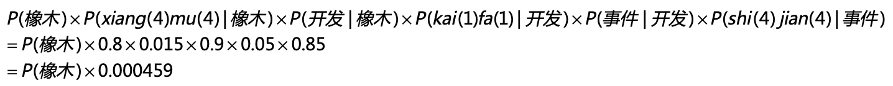

- 01 二进制：不了解计算机的源头，你学什么编程.md.html
- 02 余数：原来取余操作本身就是个哈希函数.md.html
- 03 迭代法：不用编程语言的自带函数，你会如何计算平方根？.md.html
- 04 数学归纳法：如何用数学归纳提升代码的运行效率？.md.html
- 05 递归（上）：泛化数学归纳，如何将复杂问题简单化？.md.html
- 06 递归（下）：分而治之，从归并排序到MapReduce.md.html
- 07 排列：如何让计算机学会“田忌赛马”？.md.html
- 08 组合：如何让计算机安排世界杯的赛程？.md.html
- 09 动态规划（上）：如何实现基于编辑距离的查询推荐？.md.html
- 10 动态规划（下）：如何求得状态转移方程并进行编程实现？.md.html
- 11 树的深度优先搜索（上）：如何才能高效率地查字典？.md.html
- 12 树的深度优先搜索（下）：如何才能高效率地查字典？.md.html
- 13 树的广度优先搜索（上）：人际关系的六度理论是真的吗？.md.html
- 14 树的广度优先搜索（下）：为什么双向广度优先搜索的效率更高？.md.html
- 15 从树到图：如何让计算机学会看地图？.md.html
- 16 时间和空间复杂度（上）：优化性能是否只是“纸上谈兵”？.md.html
- 17 时间和空间复杂度（下）：如何使用六个法则进行复杂度分析？.md.html
- 18 总结课：数据结构、编程语句和基础算法体现了哪些数学思想？.md.html
- 19 概率和统计：编程为什么需要概率和统计？.md.html
- 20 概率基础（上）：一篇文章帮你理解随机变量、概率分布和期望值.md.html
- 21 概率基础（下）：联合概率、条件概率和贝叶斯法则，这些概率公式究竟能做什么？.md.html
- 22 朴素贝叶斯：如何让计算机学会自动分类？.md.html
- 23 文本分类：如何区分特定类型的新闻？.md.html
- 24 语言模型：如何使用链式法则和马尔科夫假设简化概率模型？.md.html
- 25 马尔科夫模型：从PageRank到语音识别，背后是什么模型在支撑？.md.html
- 26 信息熵：如何通过几个问题，测出你对应的武侠人物？.md.html
- 27 决策树：信息增益、增益比率和基尼指数的运用.md.html
- 28 熵、信息增益和卡方：如何寻找关键特征？.md.html
- 29 归一化和标准化：各种特征如何综合才是最合理的？.md.html
- 30 统计意义（上）：如何通过显著性检验，判断你的A_B测试结果是不是巧合？.md.html
- 31 统计意义（下）：如何通过显著性检验，判断你的A_B测试结果是不是巧合？.md.html
- 32 概率统计篇答疑和总结：为什么会有欠拟合和过拟合？.md.html
- 33 线性代数：线性代数到底都讲了些什么？.md.html
- 34 向量空间模型：如何让计算机理解现实事物之间的关系？.md.html
- 35 文本检索：如何让计算机处理自然语言？.md.html
- 36 文本聚类：如何过滤冗余的新闻？.md.html
- 37 矩阵（上）：如何使用矩阵操作进行PageRank计算？.md.html
- 38 矩阵（下）：如何使用矩阵操作进行协同过滤推荐？.md.html
- 39 线性回归（上）：如何使用高斯消元求解线性方程组？.md.html
- 40 线性回归（中）：如何使用最小二乘法进行直线拟合？.md.html
- 41 线性回归（下）：如何使用最小二乘法进行效果验证？.md.html
- 42 PCA主成分分析（上）：如何利用协方差矩阵来降维？.md.html
- 43 PCA主成分分析（下）：为什么要计算协方差矩阵的特征值和特征向量？.md.html
- 44 奇异值分解：如何挖掘潜在的语义关系？.md.html
- 45 线性代数篇答疑和总结：矩阵乘法的几何意义是什么？.md.html
- 46 缓存系统：如何通过哈希表和队列实现高效访问？.md.html
- 47 搜索引擎（上）：如何通过倒排索引和向量空间模型，打造一个简单的搜索引擎？.md.html
- 48 搜索引擎（下）：如何通过查询的分类，让电商平台的搜索结果更相关？.md.html
- 49 推荐系统（上）：如何实现基于相似度的协同过滤？.md.html
- 50 推荐系统（下）：如何通过SVD分析用户和物品的矩阵？.md.html
- 51 综合应用篇答疑和总结：如何进行个性化用户画像的设计？.md.html
- 导读：程序员应该怎么学数学？.md.html
- 开篇词 作为程序员，为什么你应该学好数学？.md.html
- 数学专栏课外加餐（一） 我们为什么需要反码和补码？.md.html
- 数学专栏课外加餐（三）：程序员需要读哪些数学书？.md.html
- 数学专栏课外加餐（二） 位操作的三个应用实例.md.html
- 结束语 从数学到编程，本身就是一个很长的链条.md.html
- 捐赠
25 马尔科夫模型：从PageRank到语音识别，背后是什么模型在支撑？
你好，我是黄申。
上一节，我们介绍了基于概率的语言模型。概率语言模型的研究对象其实是一个词的序列，以及这个词序列出现的概率有多大。那语言模型是不是也可以用于估算其他序列出现的概率呢？答案是肯定的。
通过上一节我们知道，语言模型中有个重点：马尔科夫假设及对应的多元文法模型。如果我们把这一点进一步泛化，就能引出马尔科夫模型。也就是说，只要序列的每个状态之间存在转移的概率，那么我们就可以使用马尔科夫模型。有时候情况会更复杂，不仅每个状态之间的转移是按照一定概率进行的，就连每个状态本身也是按照一定概率分布出现的，那么还需要用到隐马尔科夫模型。
今天这一节，我们就来学习马尔科夫模型、隐马尔科夫模型，以及它们在PageRank和语音识别中的应用。
马尔科夫模型
在介绍语言模型的时候，我们提到了马尔科夫假设，这个假设是说，每个词出现的概率和之前的一个或若干个词有关。我们换个角度思考就是，每个词按照一定的概率转移到下一个词。怎么个转移呢？我来解释一下。
如果把词抽象为一个状态，那么我们就可以认为，状态到状态之间是有关联的。前一个状态有一定的概率可以转移到到下一个状态。如果多个状态之间的随机转移满足马尔科夫假设，那么这类随机过程就是一个马尔科夫随机过程。而刻画这类随机过程的统计模型，就是马尔科夫模型（Markov Model）。
前面讲多元文法的时候，我提到了二元文法、三元文法。对于二元文法来说，某个词出现的概率只和前一个词有关。对应的，在马尔科夫模型中，如果一个状态出现的概率只和前一个状态有关，那么我们称它为一阶马尔科夫模型或者马尔科夫链。对应于三元、四元甚至更多元的文法，我们也有二阶、三阶等马尔科夫模型。
我们先从最简单的马尔科夫模型-马尔科夫链开始看。我画了一张示意图，方便你理解马尔科夫链中各个状态的转移过程。
在这张图中，你可以看到，从状态A到B的概率是0.1，从状态B到状态C的概率是0.2等等。我们也可以使用状态转移表来表示这张图。
我们可以根据某个应用的需要，把上述状态转移表具体化。例如，对于语言模型中的二元文法模型，我这里列出了一个示意表。
当然，除了二元文法模型，马尔科夫链还有很多应用的场景。
Google公司最引以为傲的PageRank链接分析算法，它的核心思想就是基于马尔科夫链。这个算法假设了一个“随机冲浪者”模型，冲浪者从某张网页出发，根据Web图中的链接关系随机访问。在每个步骤中，冲浪者都会从当前网页的链出网页中随机选取一张作为下一步访问的目标。在整个Web图中，绝大部分网页节点都会有链入和链出。那么冲浪者就可以永不停歇地冲浪，持续在图中走下去。
在随机访问的过程中，越是被频繁访问的链接，越是重要。可以看出，每个节点的PageRank值取决于Web图的链接结构。假如一个页面节点有很多的链入链接，或者是链入的网页有较高的被访问率，那么它也将会有更高的被访问概率。
那么，PageRank的公式和马尔科夫链有什么关系呢？我先给你看一张Web的拓扑图。
其中A、B、C等结点分别代表了页面，而结点之间的有向边代表了页面之间的超链接。看了这张图，你是不是觉得Web拓扑图和马尔科夫链的模型图基本上是一致的？我们可以假设每张网页就是一个状态，而网页之间的链接表明了状态转移的方向。这样，我们很自然地就可以使用马尔科夫链来刻画“随机冲浪者”。
另外，在最基本的PageRank算法中，我们可以假设每张网页的出度是\(n\)，那么从这张网页转移到任何下一张相连网页的概率都是\(\\frac{1}{n}\)，因此这个转移的概率只和当前页面有关，满足一阶马尔科夫模型的假设。我在之前的拓扑结构中添加了转移的概率。
PageRank在标准的马尔科夫链上，引入了随机的跳转操作，也就是假设冲浪者不按照Web图的拓扑结构走下去，只是随机挑选了一张网页进行跳转。这样的处理是类比人们打开一张新网页的行为，也是符合实际情况的，避免了信息孤岛的形成。最终，根据马尔科夫链的状态转移和随机跳转，可以得到如下的PageRank公式。
其中，\(p\_{i}\)表示第\(i\)张网页，\(M\_{i}\)是\(p\_{i}\)的入链接集合，\(p\_{j}\)是\(M\_{i}\)集合中的第\(j\)张网页。\(PR\_{(p\_{j})}\)表示网页\(p\_{j}\)的PageRank得分，\(L\_{(p\_{j})}\)表示网页\(p\_{j}\)的出链接数量，\(\\frac{1}{L\_{(p\_{j})}}\)就表示从网页\(p\_{j}\)跳转到\(p\_{i}\)的概率。\(α\)是用户不进行随机跳转的概率，\(N\)表示所有网页的数量。
从最简单的马尔科夫链，到多阶的马尔科夫模型，它们都可以刻画基于马尔科夫假设的随机过程，例如概率语言模型中的多元文法和PageRank这类链接分析算法。但是，这些模型都是假设每个状态对我们都是已知的，比如在概率语言模型中，一个状态对应了单词“上学”，另一个状态对应了单词“书包”。可是，有没有可能某些状态我们是未知的呢？下面我们就来详细说说这种情况。
隐马尔科夫模型
在某些现实的应用场景中，我们是无法确定马尔科夫过程中某个状态的取值的。这种情况下，最经典的案例就是语音识别。使用概率对语音进行识别的过程，和语言模型类似，因此我们可以把每个等待识别的词对应为马尔科夫过程中的一个状态。不过，语音识别所面临的困难更大。为什么呢？你先看看下面这个句子。这个句子里全都是拼音，你能看出它表示什么意思吗？
ni(三声) zhi(一声) dao(四声) wo(三声) zai(四声) deng(三声) ni(三声) ma(一声)
中国有句古话说得好，“白纸黑字”，写在文档里的文字对于计算机是确定的，“嘛”“吗”“妈”不会弄错。可是，如果你说一句“你知道我在等你吗”，听众可能一直弄不明白为什么要等别人的妈妈，除非你给他们看到文字版的内容，证明最后一个字是口字旁的“吗”。另外，再加上各种地方的口音、唱歌的发音或者不标准的拼读，情况就更糟糕了。
计算机只知道某个词的发音，而不知道它具体怎么写，对于这种情况，我们就认为计算机只能观测到每个状态的部分信息，而另外一些信息被“隐藏”了起来。这个时候，我们就需要用隐马尔科夫模型来解决这种问题。隐马尔科夫模型有两层，一层是我们可以观测到的数据，称为“输出层”，另一层则是我们无法直接观测到的状态，称为“隐藏状态层”。我画了一张图方便你理解。
其中，\(x\_{1}，x\_{2}，x\_{3}\)等等属于隐藏状态层，\(a\_{12}\)表示了从状态\(x\_{1}\)到\(x\_{2}\)的转移概率，\(a\_{23}\)表示了从状态\(x\_{2}\)到\(x\_{3}\)的转移概率。这一层和普通的马尔科夫模型是一致的，可惜在隐马尔科夫模型中我们无法通过数据直接观测到这一层。我们所能看到的是，\(y\_{1}，y\_{2}，y\_{3}\)等等代表的“输出层”。另外，\(b\_{11}\)表示了从状态\(x\_{1}\)到\(y\_{1}\)的输出概率，\(b\_{22}\)表示了从状态\(x\_{2}\)到\(y\_{2}\)的输出概率，\(b\_{33}\)表示了从状态\(x\_{3}\)到\(y\_{3}\)的输出概率等等。
那么在这个两层模型示例中，“隐藏状态层”产生“输出层”的概率是多少呢？这是一系列条件概率决定的，具体的公式我列在这里。
如果你觉得这个两层的模型不太好理解，我来给你说个浅显易懂的例子。假设正在进行普通话语音识别，计算机接受了一个词组的发音。我在下面列出了它的拼音。
xiang(四声)mu(四声) kai(一声)fa(一声) shi(四声)jian(四声)
假设根据我们手头上的语料数据，这个词组有多种可能，我列出两种。
第一种情况
第一种情况下，三个确定的状态是“项目”“开发”和“时间”这三个词。从“项目”转移到“开发”的概率是0.25，从“开发”转移到“时间”的概率是0.3。从“项目”输出“xiang（三声）mu（四声）”的概率是0.1，输出“xiang（四声）mu（四声）”的概率是0.8，输出“xiang（四声）mu（一声）”的概率是0.1，“开发”和“时间”也有类似的输出概率。
这个时候你可能会奇怪，“项目”的普通话发音就是“xiang（四声）mu（四声）”，为什么还会输出其他的发音呢？这是因为，前面说的这些概率都是通过历史语料的数据统计而来。在进行语音识别的时候，我们会通过不同地区、不同性别、不同年龄等等的人群，采集发音的样本。如此一来，影响这个发音的因素就很多了，比如方言、口音、误读等等。当然，在正常情况下，大部分的发音还是标准的，所以“项目”这个词输出到“xiang（四声）mu（四声）”的概率是最高的。
好，有了这些概率的分布，我们来看看“项目开发时间”这个词组最后生成的概率是多少。在两层模型的条件概率公式中，我代入了具体的概率值并使用了如下的推导：
第二种情况
在第二种的可能性中，三个确定的状态是“橡木”“开发”和“事件”这三个词。从“橡木”转移到“开发”的概率是0.015，从“开发”转移到“事件”的概率是0.05。从“橡木”输出“xiang（一声）mu（四声）”的概率是0.2，输出“xiang（四声）mu（四声）”的概率是0.8，“开发”和“事件”也有类似的输出概率。和第一种情况类似，我们可以计算“橡木开发事件”这个词组最后生成的概率是多少，我用下面这个公式来推导：

最后比较第一种和第二种情况产生的概率，分别是P(项目)x0.0027和P(橡木)x0.000459。假设P(项目)和P(橡木)相等，那么“项目开发时间”这个词组的概率更高。所以“xiang（四声）mu（四声）kai（一声）fa（一声）shi（四声）jian（四声）”这组发音，计算机会识别为“项目开发时间”。从中我们可以看出，尽管“事件”这个词产生“shi（四声）jian（四声）”这个发音的可能性更高，但是“橡木开发事件”这个词组出现的概率极低，因此最终计算机还是选择了“项目开发时间”，隐藏的状态层起到了关键的作用。
总结
马尔科夫模型考虑了n个状态之间的转移及其对应的关系。这个状态是比较抽象的含义，在不同的应用领域代表不同的含义。在概率语言模型中，状态表示不同的词，状态之间的转移就代表了词按照一定的先后顺序出现。在PageRank这种链接分析中，状态表示不同的网页，状态之间的转移就代表了人们在不同网页之间的跳转。
在马尔科夫模型中，我们知道了每种状态及其之间转移的概率，然后求解序列出现的概率。然而，有些现实的场景更为复杂，比如说我们观测到的不是状态本身，而是状态按照一定概率分布所产生的输出。针对这种情况，隐马尔科夫模型提出了一种两层的模型，同时考虑了状态之间转移的概率和状态产生输出的概率，为语音识别、手写识别、机器翻译等提供了可行的解决方案。
隐马尔科夫模型需要回答的最主要问题是：给定一个模型和某个特定的输出序列，如何找到最可能产生这个输出的状态序列？在本节中，我使用了“项目开发时间”这个例子展示隐马尔科夫模型是如何工作的。不过这个例子很简单，我只比较了两种可能性。但是，实际中可能性是非常多的，如果我们使用穷举法，那么复杂度一定很高。
我们可以把两层的模型看作图结构。其中，状态和输出是结点，转移和输出关系是边，相应的概率是边的权重，这个时候我们就可以对Dijkstra算法稍加修改，来找出权重乘积最大的最优路径，提升查找的效率。我们还可以利用状态序列之间存在的先后关系，使用基于动态规划的维特比（Viterbi）算法来找出最优路径。
思考题
机器翻译会使用大量的语料，自动学习不同语言之间词和词的匹配。如果在机器翻译中使用隐马尔科夫进行建模，你认为“隐藏状态层”表示的是什么？“输出层”表示的又是什么？
欢迎留言和我分享，也欢迎你在留言区写下今天的学习笔记。你可以点击“请朋友读”，把今天的内容分享给你的好友，和他一起精进。
© 2019 - 2023 Liangliang Lee. Powered by gin and hexo-theme-book.